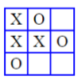

Brættet er ni felter (3x3), og hver spiller skiftes til at placere en kryds/bolle. Den der først når tre på stribe vinder. Spillet afsluttes senest når alle felter er udfyldt eller man kan nøjes med tre brikker hver, således at man efter at have sat den tredje brik skiftes til at flytte en af sine egne brikker.

Hvis begge spillere spiller bedst muligt, vil spillet altid ende uafgjort, dvs. ingen af spillerne opnår tre på stribe.